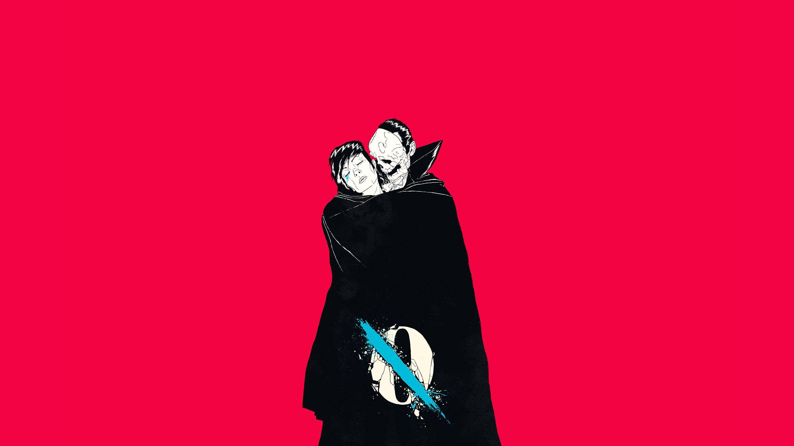

*…Like Clockwork* est un album de Queens of the Stone Age sorti en 2013. Il mélange rock alternatif, stoner rock et atmosphères sombres. L’album aborde des thèmes comme la solitude, le doute et les difficultés personnelles, avec un son à la fois puissant et mélancolique.
...Like Clockwork
3 juin 2013
Queens of the Stone Age
- 01. Keep Your Eyes Peeled
- 02. I Sat by the Ocean
- 03. The Vampyre of Time and Memory
- 04. If I Had a Tail
- 05. My God Is the Sun
- 06. Kalopsia
- 07. Fairweather Friends
- 08. Smooth Sailing
- 09. I Appear Missing
- 10. ...Like Clockwork